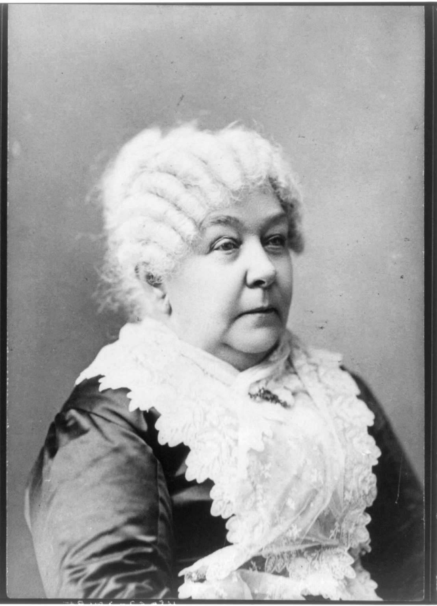

Directions: Fill in the chart as we build the argument the women of 1848 carried into the Wesleyan Chapel. Keep this page in your notebook. You will use it again on the review day before the unit test.

| The piece | What it says or does | Where it came from | What it left to win |
|---|---|---|---|
| Coverture, the condition | |||
| London, 1840 | |||
| Grimké's Letters, 1837 and 1838 | |||
| The property act, April 1848 | |||
| The Declaration and resolutions, July 1848 |
The argument in one sentence. Finish this sentence in your own words, using at least two rows of the chart as evidence. The women of 1848 did not invent their argument at Seneca Falls, because...
| The piece | What it says or does | Where it came from | What it left to win |
|---|---|---|---|
| Coverture, the condition | A married woman's legal existence was covered by her husband's. Her property and her wages were his in law, she could not contract or sue in her own name, and the Declaration called her civilly dead. | English common law, standing in every state in 1848. | Everything. It is the condition the whole file answers. |
| London, 1840 | The World's Anti-Slavery Convention refused its women delegates their seats and curtained them in the gallery. Mott and Stanton agreed there to hold a convention on the rights of woman. | The antislavery movement women had run for a decade. | The convention itself, which waited eight years for its occasion in July 1848. |
| Grimké's Letters, 1837 and 1838 | Sarah Grimké argued from Genesis that the sexes were created equal, that Adam and Eve fell from innocence and happiness but not from equality, and that woman's subjection was man's doing, not God's. | Her answer to the clergy whose pastoral letter of 1837 ordered women back to their sphere. | A political program. The Letters named no statute, convention, or vote. |
| The property act, April 1848 | New York's act of April 7, 1848 let a married woman hold property in her own name, as if she were a single female, apart from her husband's disposal and debts. | Petitions sent since the 1830s, and debate at the constitutional convention of 1846. | A wife's wages, her power to contract, and the vote, none of which the act gave. |
| The Declaration and resolutions, July 1848 | Stanton rewrote the Declaration of Independence to hold that all men and women are created equal, laid grievances against man, and demanded immediate admission to all rights of citizens. The suffrage resolution passed narrowly after Douglass spoke. One hundred people signed. | The text of 1776, the Grimké argument of 1837, and the London agreement of 1840. | The vote itself, and the rest of the grievance list. |
The argument in one sentence. Strong answers join the sources to the convention. The women of 1848 did not invent their argument at Seneca Falls, because Grimké had printed the scriptural case for created equality in 1837, the founders had printed the political case in 1776, antislavery work had trained the organizers for a decade, and London had shown them their exclusion from a curtained gallery.